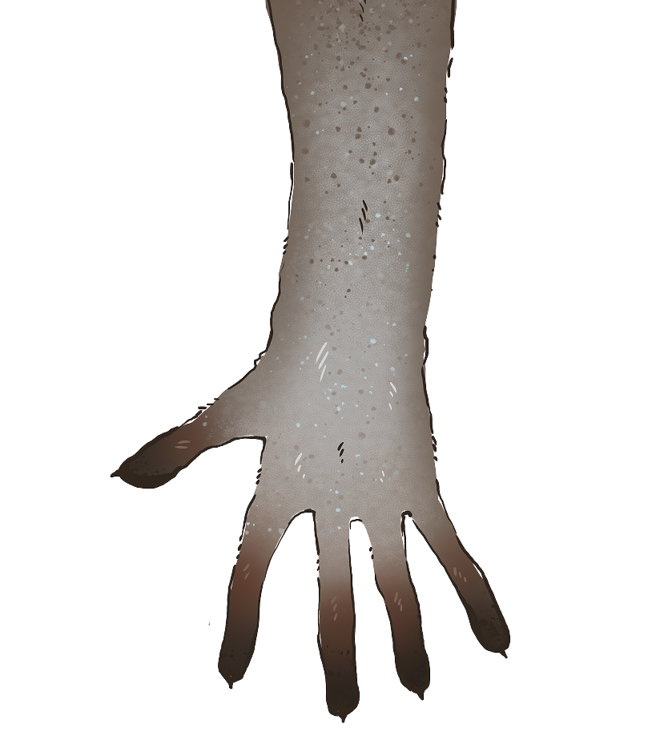

Что едят лемуры?
В основе их рациона преобладает растительная еда: соцветия, молодые побеги, корни и кора деревьев, семена, листья. Также лемуры могут есть смолы растений, нектар и пыльцу цветов.
Основной источник питания в дикой природе — плоды Тамаринда. Лемуры любят свежие фрукты и овощи. Особое лакомство для них это бананы и плоды фиги. Так же груши, гранаты, ягоды, брокколи, болгарский перец и т.д.
Ещё они могут употреблять в пищу жуков, бабочек, пауков, тараканов. В рационе лемуров встречаются лягушки, хамелеоны, мелкие птицы и яйца из гнёзд. С особенным удовольствием лемуры едят мучных червей, фрукты, вымоченный в воде хлеб, вареные яйца, рисовую и пшенную каши.
Строение
ХВОСТ
59 - 63 см
ТЕЛО
39 - 46 см
У самцов острые кончики пальцев, которыми они царапают кору молодых деревьев; железы на лапах пропитывают кору резким запахом, помечая границы территории.
Длинный хвост служит кошачьим лемурам для сигналов между сородичами, в качестве распространителя запахов, а также для поддержания баланса при лазании и прыгании.